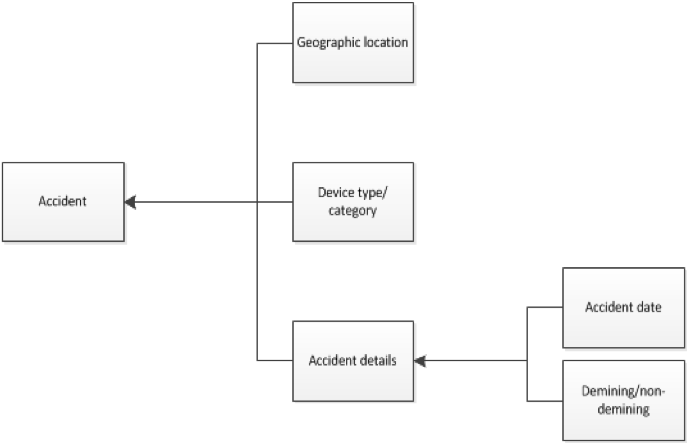

Minimum Data Requirements
Introduction
Purpose
Common Requirements
Activities (NTS/TS/Clearance/BAC/EOD etc.)
Mine/ERW contaminated area/location
Land release product
Quality assurance visit
Risk Education
Accident
Victim
Minimum Data Requirements
Docs
»
Accident
View page source
Accident
¶
Coordinates of location of accident
Date of accident
Category of device causing accident
Demining or mine accident
